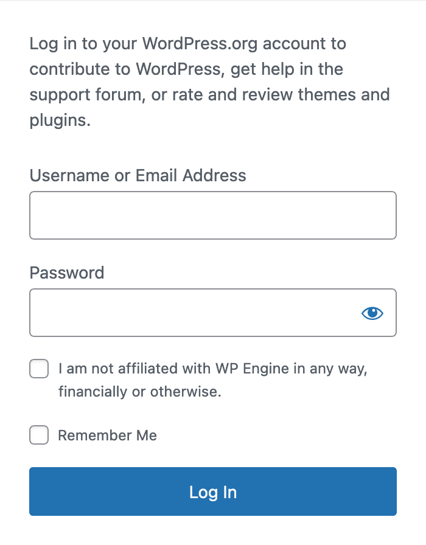

Fear, uncertainty, and doubt (FUD) is as old as time. In a nutshell, it’s a disinformation tactic. You put out false information, engendering fear, in the hope that you can manipulate people toward a particular outcome favorable to you. No, I’m not talking about Donald Trump and the 2024 US election. I’m talking about Matt Mullenweg, WordPress.org, and Automattic over the last month.[1]
My introduction to FUD was in the late 1990s. I was in high school, I was playing around with Linux, and I was a regular poster on Slashdot. This was the high-water point of Microsoft trying to undermine public confidence in open source in general and Linux in particular. This was the period of the “Halloween documents” and SCO v. IBM. Rather than compete on the technical merits, Microsoft sought to create an environment where companies were afraid to adopt open source technologies because of nebulous licensing or patent concerns. The fact that these efforts ultimately failed doesn’t change how much time and money was spent combatting them. The opportunity cost was high.
Which brings me back to WordPress. I wrote yesterday (“The call is coming from inside the house”) about Matt Mullenweg’s seizure of Advanced Custom Fields on the WordPress.org plugins repository. I mentioned in passing that he also banned WP Engine from the repository. Something I didn’t mention is that logging into WordPress.org now requires you to attest that “I am not affiliated with WP Engine in any way, financially or otherwise.”

This is a classic example of FUD. What does it mean to be affiliated with WP Engine, financially or otherwise? Is this limited to employees of WP Engine and investors in the company? What about people who host their sites on WP Engine or Flywheel? What if you, or your company, owns an Advanced Custom Fields Pro license? Never mind that many people who own ACF licenses bought them two acquisitions ago.[2] Does that qualify as affiliation? If my company has an Akismet license, does that mean I’m “affiliated” with Automattic? Nothing in the terms of service for Akismet says so.
I am not a lawyer. The above isn’t a question that would normally concern me. However, Mullenweg’s approach toward WP Engine has been aggressive, both in conduct and tone. The departure of 8.4% of Automattic’s employees, and the reports of people being blocked on Twitter and removed from the official WordPress Slack, suggest that the important thing right now is picking a side. I suspect I speak for most downstream users of WordPress when I say that I’m not interested in picking a side between Mullenweg and WP Engine. That’s not my fight and I derive no benefit from it.
Mullenweg has created a situation where I’m not sure if by logging into WordPress.org I’m placing myself in the wrong. In my opinion, this is deliberate. ACF is an important plugin; creating uncertainty around its use is a way to hurt WP Engine. Witness all the ballyho around “Secure Custom Fields”; the name alone implies that that ACF is in some way insecure. This isn’t true, as this excellent post from Tim Nash makes clear. Still, some damage is no doubt done. Going forward, there are at least three plugins providing similar functionality:
- Advanced Custom Fields 6.3.6.1: the last version of the free ACF plugin developed by WP Engine and released through WordPress.org. Contains an upsell to Advanced Custom Fields Pro. Auto-upgrade path is to Secure Custom Fields.
- Secure Custom Fields 6.3.6.2: the latest version on WordPress.org. Usurped by Mullenweg, with the upsell to Advanced Custom Fields Pro removed.
- Advanced Custom Fields 6.3.8: the current free version of the ACF plugin, still developed by WP Engine and available through its official website. Removed the dependency on WordPress.org. Requires a one-time manual step by site owners to install.
Sorry if you’re a WordPress administrator and you had other plans for mid-October. If you’re part of the ACF ecosystem, you’re having to consider questions that would have seemed foreign a month ago, such as whether I’m placing myself in legal jeopardy by logging in to WordPress.org. Are further steps coming? Will “affiliated” people be banned from downloading plugins from WordPress.org? It sounds ridiculous, but as I said yesterday I see no evidence of limiting principles. It’s important to recognize that all the FUD surrounding WP Engine and Advanced Custom Fields has a single source, and that Mullenweg’s explicit goal in this campaign is to weaken a competitor.
I don’t want to pick a side. I want to work on my actual job, which does not involve getting dragged into a fight between two hosting companies. Mullenweg has created legal uncertainty where none existed previously, and I’m concerned about future developments. No one asked for this and it’s hard to see how anyone benefits.
Mullenweg says WordPress.org “belongs to me personally”, so I’m not going to distinguish him from th e platform. ↩︎
Elliott Condon sold ACF to Delicious Brains in June 2021. WP Engine bought Delicious Brains a year later. ↩︎